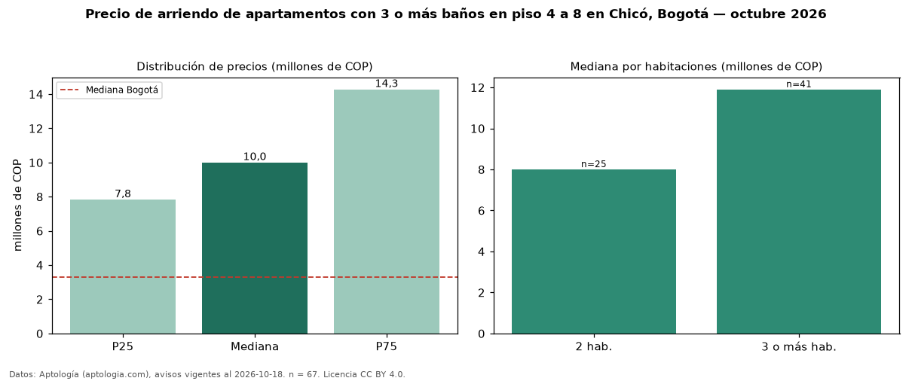

Precio de arriendo de apartamentos con 3 o más baños en piso 4 a 8 en Chicó, Bogotá — octubre 2026
COP 10 millones al mes es el canon mediano de apartamentos con 3 o más baños en piso 4 a 8 en arriendo en Chicó, Bogotá (n = 67 avisos). Frente a la mediana de los apartamentos con 3 o más baños en arriendo de Chicó (COP 10,60 millones, n = 151), queda 6 % por debajo; este segmento reúne el 44 % de esos avisos. Por metro cuadrado, la mediana es COP 60.797/m² al mes (n = 64), 0 % por debajo de los apartamentos con 3 o más baños en arriendo de Chicó (COP 61.069/m²). El área mediana anunciada es 168 m². El segmento con más oferta es el de 3 o más habitaciones (41 avisos, mediana COP 11,90 millones); pasar de 2 habitaciones a 3 o más habitaciones cambia la mediana +49 %. La administración mediana declarada es COP 1,64 millones al mes (n = 53), aparte del canon. La mitad central de los avisos va de COP 7,83 millones a COP 14,27 millones (razón 1,8), una dispersión moderada. El estrato más frecuente es 6 (88 % de los avisos con estrato). Datos: Aptología (aptologia.com), CC BY 4.0 — https://www.aptologia.com/arriendo/bogota/chico. Archivos: PDF, CSV con las cifras y gráfica PNG.

| Avisos únicos | 67 |
|---|---|
| Percentil 25 | COP 7.825.000 |
| Mediana | COP 10.000.000 |
| Percentil 75 | COP 14.274.500 |
| Mediana por m² | COP 60.797 |
Fuente: avisos vigentes de portales inmobiliarios recopilados por Aptología, deduplicados (mínimo 30 avisos únicos por celda). Precios pedidos, no cerrados. Fecha: 2026-10-18.